2021–2027，Puma 为 AC米兰打造了一条独特的「第四球衣」联名线——每季邀请一个时尚/文化品牌重新演绎红黑。六个品牌，六种世界观，件件都能上场比赛。
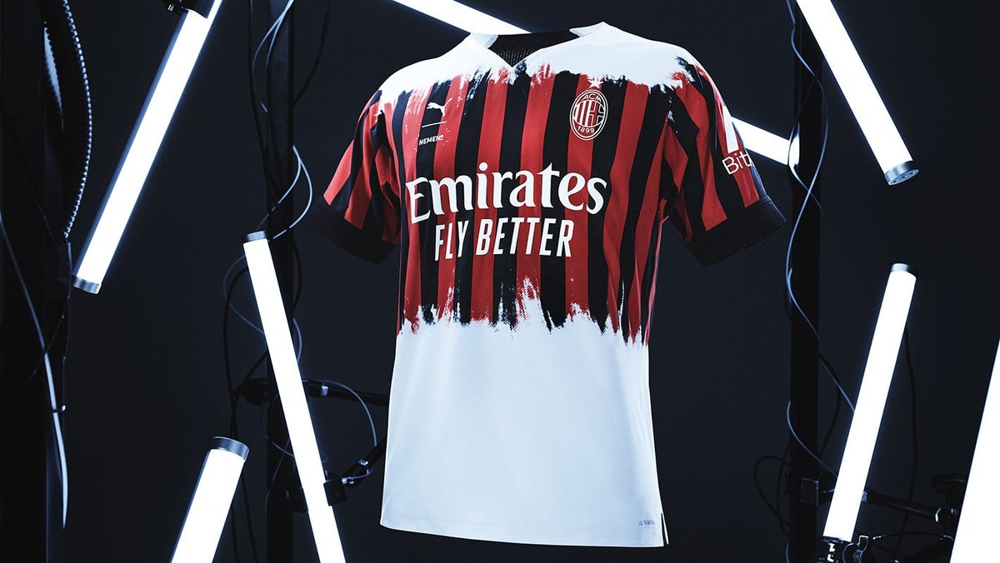
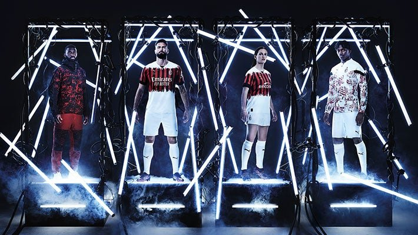
悬停切换官方视觉2022年4月，AC米兰与米兰本土机能品牌 NEMEN 推出俱乐部历史上第一件与时尚品牌联名的比赛球衣。创始人 Leonardo Fasolo 是终身米兰球迷，他把经典的 Rossoneri 条纹用「拔染印花」做出晕染消隐的效果——白底之上，红黑像被光线侵蚀一样渐隐。
球衣基于 Puma ULTRAWEAVE 面料，是当时 Puma 史上最轻的比赛球衣。首发即实战：女足 4月3日战恩波利、男足 4月4日战博洛尼亚。同系列还包括机能外套等场下单品——大片里伊布那身红花外套就出自该系列。
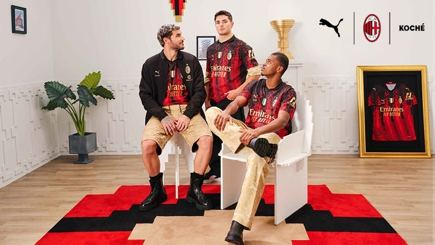
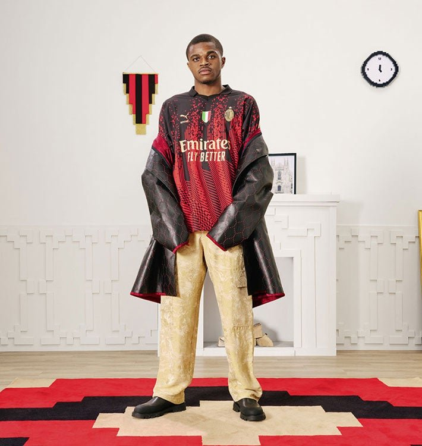
悬停切换官方视觉与巴黎时装品牌 KOCHÉ（设计师 Christelle Kocher）合作，把红黑条纹做成了「游戏化」的像素渐变——条纹从领口向下逐渐「溶解」成 8-bit 马赛克，像一件从数字世界掉进现实的球衣。
细节同样讲究：Polo 领、金色点缀呼应联赛冠军的优雅、胸前保留意大利国旗徽章。整组大片在「像素公寓」里拍摄——挂毯、时钟、地毯全部像素化。系列含球衣、短裤、门将服和赛前外套。
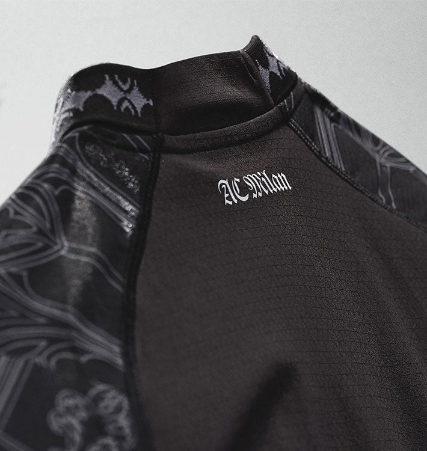
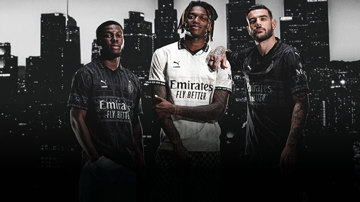
悬停切换官方视觉洛杉矶街牌 PLEASURES（联合创始人 Alex James 在意裔社区长大，「米兰是唯一重要的球队」）带来影调概念：黑色版与米白版（Pristine）分别象征黄昏与黎明。后领用哥特老英文字体压印 "AC Milan"，肩部织入米兰大教堂的哥特建筑线稿——把 LA 的朋克、金属、Grunge 与米兰的哥特式优雅缝在了一起。
两个「俱乐部历史第一次」：反光 Logo 首次出现在米兰球衣上；两版球衣首次在不同比赛分别使用——2月11日战那不勒斯球员穿黑、门将穿白，2月18日战蒙扎反过来。女足在 2月17日德比穿着亮相。
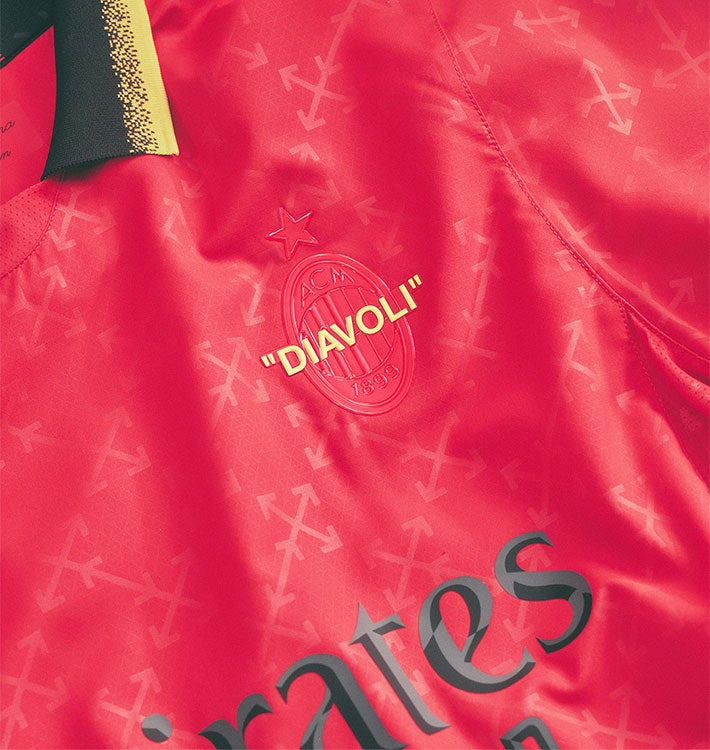
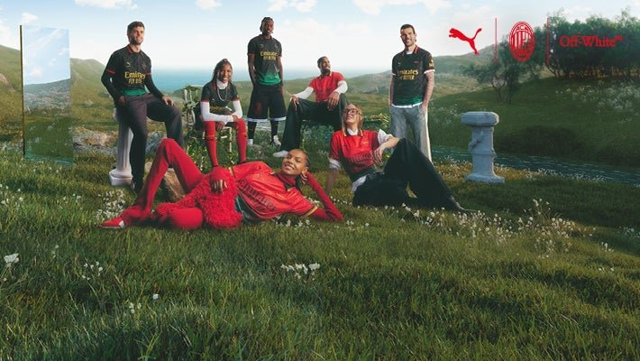
悬停切换官方视觉这是 Off-White™ 品牌历史上第一件真正穿上球场的球衣。核心符号是数字 63（印在内领）：1963年米兰首夺欧洲冠军杯，同年马丁·路德·金发表《I Have a Dream》——两个「梦想」在一件球衣上汇合。
黑绿渐变与红绿渐变两个版本均注入泛非色彩，致敬黑人卓越。Off-White 的标志性元素全部在场：全幅箭头暗纹、拉链扣（zip tie）、队徽上的引号字体 "DIAVOLI"、背后球员姓氏的引号。2月16日战维罗纳首秀（球员黑版/门将红版），概念还延伸进《Rocket League》与《堡垒之夜》的数字世界。
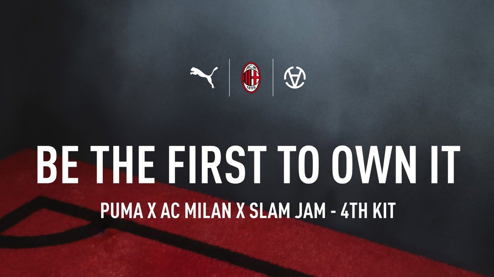
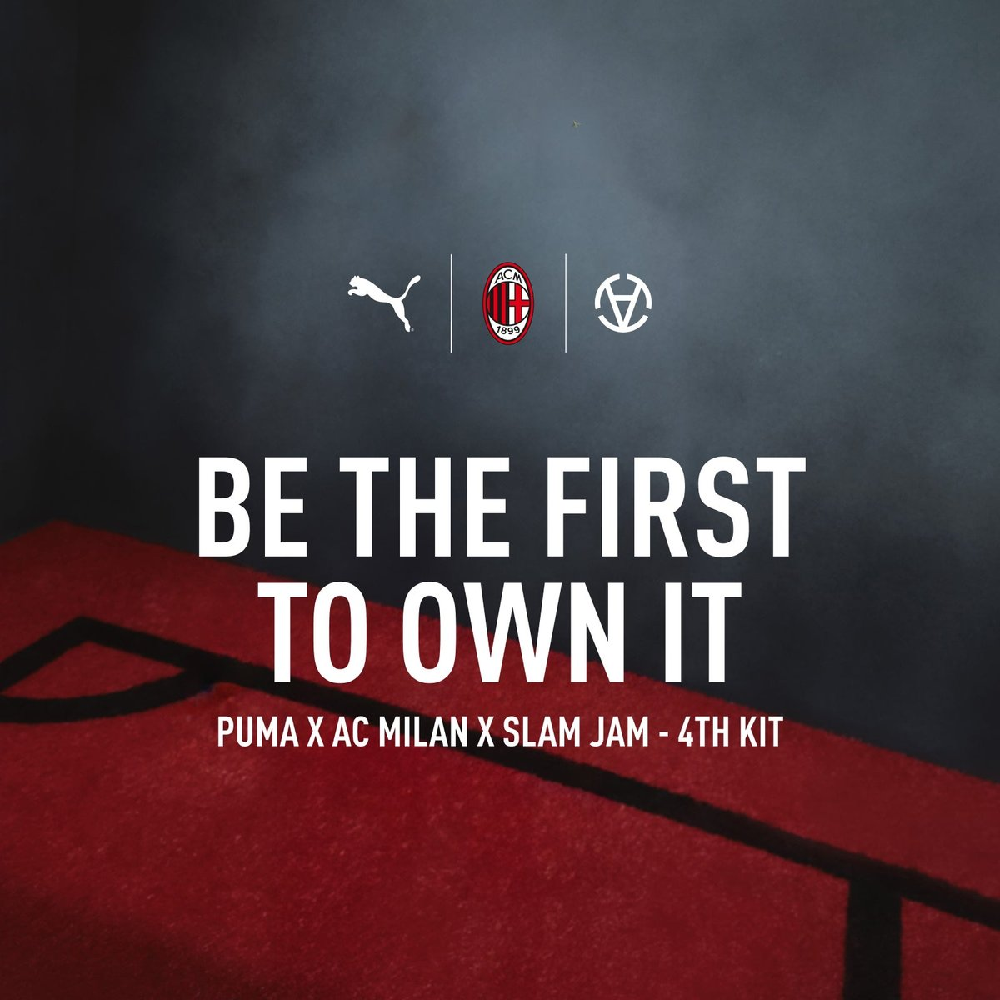
悬停切换官方视觉与欧洲街头文化先驱 Slam Jam（Luca Benini 创立）合作，主题直取基尔平 1899 年的名言「我们将是一支恶魔之队」。设计师 Bruno Prosdocimi 笔下的恶魔图案以前后贯穿球衣，限量版的内衬里还藏着恶魔/石像鬼脸——只有穿的人知道。
两个配色：深红版（场上球员，亮面质感+黑色侧片与黑色翻领，灵感来自 2001/02 第三球衣）与冷银版（门将，金属反光面料，米兰史上最实验性的面料之一）。内领织带印着「Slam Jam – Chaos is Order – 1899」。不走传统发布：直接在 2月对帕尔马的联赛中实战首秀。
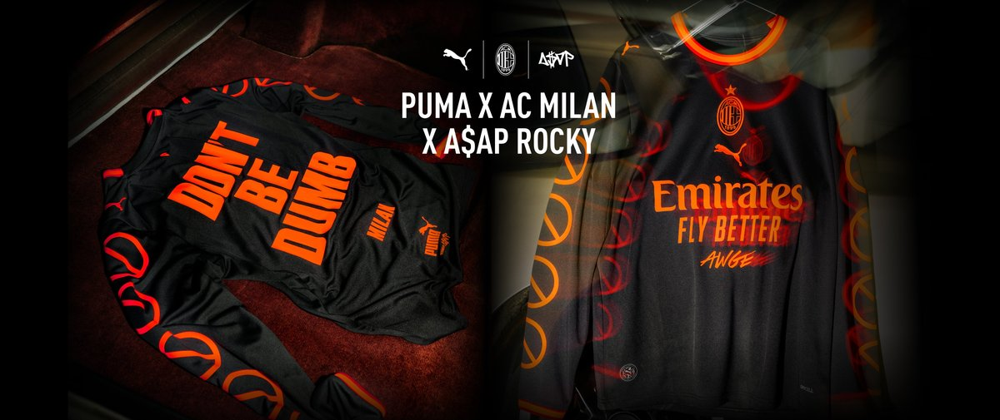
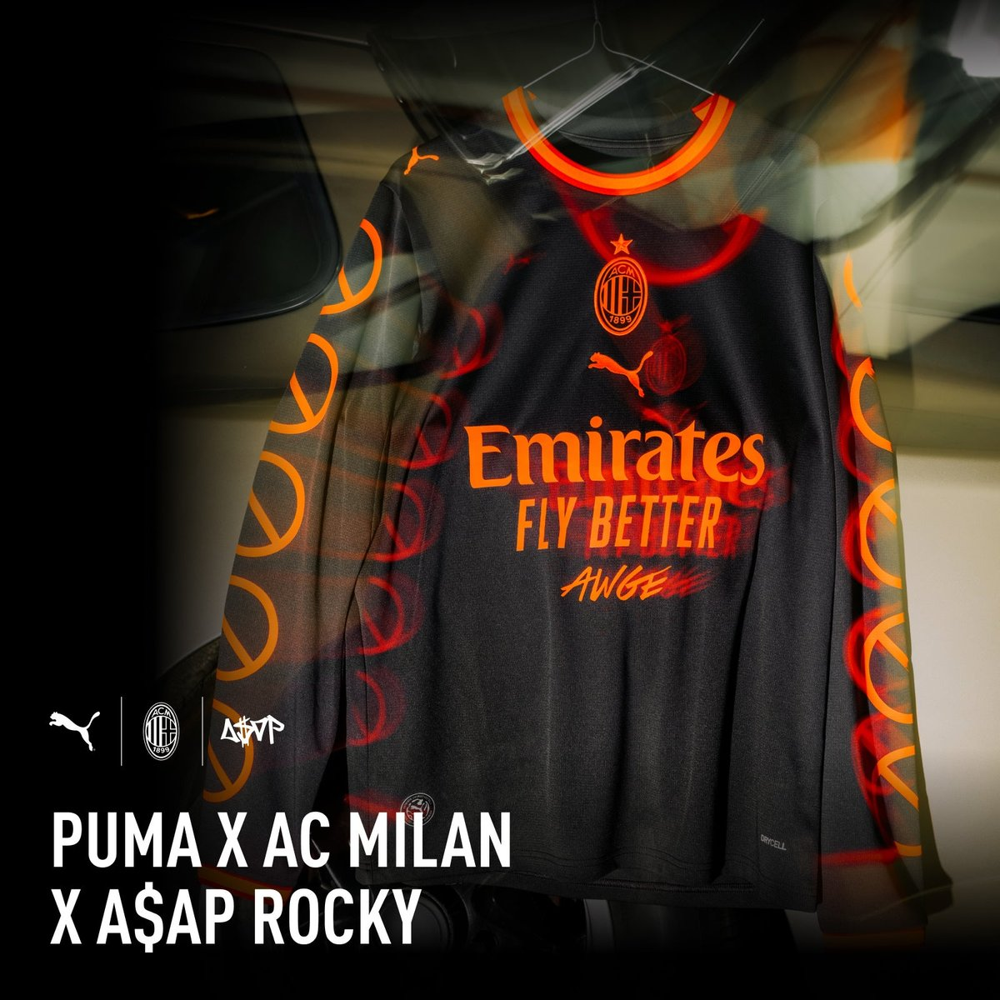
悬停切换官方视觉2026年9月9日，为 A$AP Rocky 9月10日米兰演唱会预热，米兰与 Puma、A$AP Rocky（及其厂牌 AWGE）推出限量球衣：2026/27 第三球衣的长袖版，注入其新专辑《Don't Be Dumb》的视觉——黑底之上，专辑标志性的「禁止」符号沿双袖串联而下，橙色圈领、单色队徽，胸前赞助商下压着 AWGE 标识，背面是大号 "DON'T BE DUMB" 与 "MILAN" 字样。
发售极具稀缺性：9月9日只在 Tortona 区 BASE Milano 的街区派对现场发售，9月10日起在但丁大街「恶魔精品店」限量 80 件。一线队已在都灵客场热身时提前上身穿了。球迷还可在 9月10–11日为主场/第三球衣定制专属印号 "A$AP 11"。同系列曼城也有一款（黑金配色）。
Off-White™「风格与文化策展人」年度胶囊（2022 起，含 125 周年合作）· 滚石乐队 60 周年「Sympathy for the Devil」系列（2022）· 纽约洋基（2022、2024）· Harmont & Blaine（2020、2021）· Paper Planes（2020）· TH19 × 特奥·埃尔南德斯（2022）· ACM × RL10 拉斐尔·莱昂（2024）· Puma Golf（2025）· Rossignol 滑雪胶囊（2025）